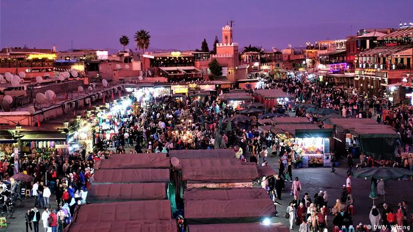
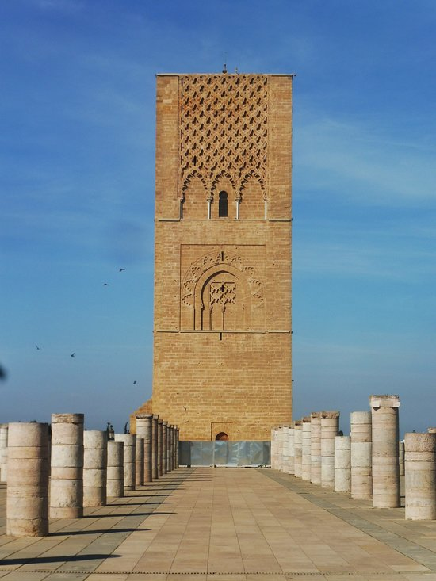
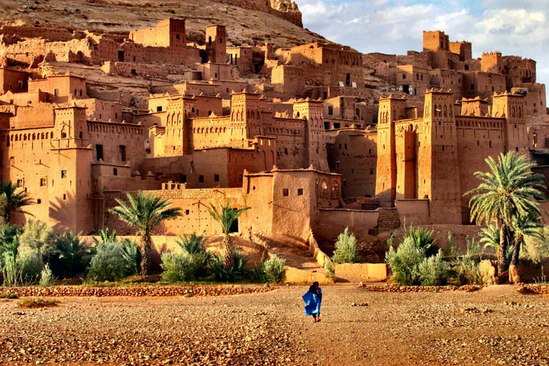

مراكش

مُرَاكُش تسمى أيضًا بالمدينة الحمراء وعاصمة النخيل، هي ثالث أكبر مدينة في المملكة المغربية من ناحية عدد السكان. وهي عاصمة جهة مراكش آسفي
تضم مراكش ساحة محصنة قديمة مكتظة بالباعة وأكشاكهم. في المدينة القديمة وهي أحد مواقع التراث العالمي لليونسكو. اليوم هي واحدة من أكثر المدن ازدحامًا في أفريقيا . وعلى الرغم من الركود الاقتصادي، نمت العقارات والفنادق في مراكش بشكل كبير في القرن الحادي والعشرين. تمتلك مراكش أكبر سوق تقليدي (سوق) في المغرب، حيث يتوفر على حوالي 18 سوقًا لبيع سلعًا تتراوح بين الزرابية الأمازيغية التقليدية والإلكترونيات الاستهلاكية الحديثة. وتوظف الحرف التقليدية نسبة كبيرة من السكان، الذين يبيعون منتجاتهم أساسا للسياح
صومعة حسان

صومعة حسان من المباني التاريخية المتميزة بالعاصمة المغربية الرباط، والتي شيدت في عصر دولة الموحدين. تم تأسيس «جامع حسان» بناءً على أمر يعقوب المنصور سنة 593 هـ أضافت منظمة اليونسكو للتراث العالمي هذا الموقع لقائمة أولية 1 يوليو 1995 في فئة الثقافة
فاس البالي

مدينة فاس البالي هي مدينة قديمة مُحاطة بالأسوار وتتميز بشوارعها الضيقة والخالية من السيارات وبمداخلها المزخرفة، مثل باب الكيسة وباب بوجلود. تُعد المدينة مقرًا لجامعة القرويين التي يرجع تاريخ تشييدها إلى القرن التاسع، وتتميّز مبانيها بالسيراميك الملوّن كما تضم مسجد الرصيف الذي يطل على ساحة ميدان تجاري نابض بالحياة. يشتهر التجار في سوق المدينة ببيع العطور والتوابل والمصابيح والجلود، وتتنوّع أماكن الطعام بين محلات بيع الكباب في الشارع وصولاً إلى مطاعم أنيقة يشرف عليها أصحاب الخبرات الكبيرة
قصر آيت بن حدو

قصر آيت بن حدو هو عبارة عن تجمع بنايات تقليدية يقع بإقليم ورززات، شيدت من الطين ومحاطة بسور دفاعي مقوى بالأبراج، ويتميز بالبساطة والمتانة في وصف. ويعتبر هذا القصر، بهندسته المتميزة، نموذجا للسكن التقليدي بالجنوب المغربي. و يندرج قصر آيت بن حدو ضمن قائمة مواقع التراث العالمي لليونيسكو
يتميز القصر باستعمال الطين والخشب المتواجدين بكثرة في المنطقة كمواد أساسية للبناء. حيث أن جميع المباني طينية، ذات أسقف من الخشب والطين. أغلب المباني هي عبارة عن منازل، تتوفر على أفنية داخلية وتتوزع على طابقين أو أكثر
دار السلطان

دار سلطان أو القصبة العالية هي قلعة من العصور الوسطى تقع في مدينة آسفي بالمغرب. صُنّفت القلعة كمعلمة أثرية وطنية منذ سنة 1922، وتضم حاليًا المتحف الوطني للخزف المغربي
أُضيفت إليها العديد من المرافق والمكاتب الإدارية مع الاحتفاظ بمظهرها الخارجي، كما أُضيفت إليها كذلك في نفس هذه الفترة محكمة وأبراج ومنزل على الطراز الموريسكي، وتستعمل حاليا ساحتها الفسيحة لإقامة المهرجانات الثقافية والفنية ومعارض للفن التشكيلي
جامع القرويين

جامع القرويين أو مسجد القرويين هو جامع في مدينة فاس المغربية التي تقع تحديدًا في أقصى الشمال شرق المغرب
ولا تزال الصومعة المربعة الواسعة في المسجد قائمة إلى الآن من يوم توسعة الأمراء الزناتيين عمال عبد الرحمن الناصر على المدينة، تعد هذه الصومعة أقدم منارة مربعة في بلاد المغرب العربي
جامعة القرويين تعتبر وفقًا لليونسكو وبناءً على تصنيفات كتاب غينيس للأرقام القياسية أقدم مؤسسة تعليم عالٍ وأول جامعة تمنح إجازة في الطب في العالم وهي ما زالت تُدرَّس حتى الآن دون انقطاعٍ. ويُشِير إليها المؤرخون بأنها أقدم جامعة في العالم